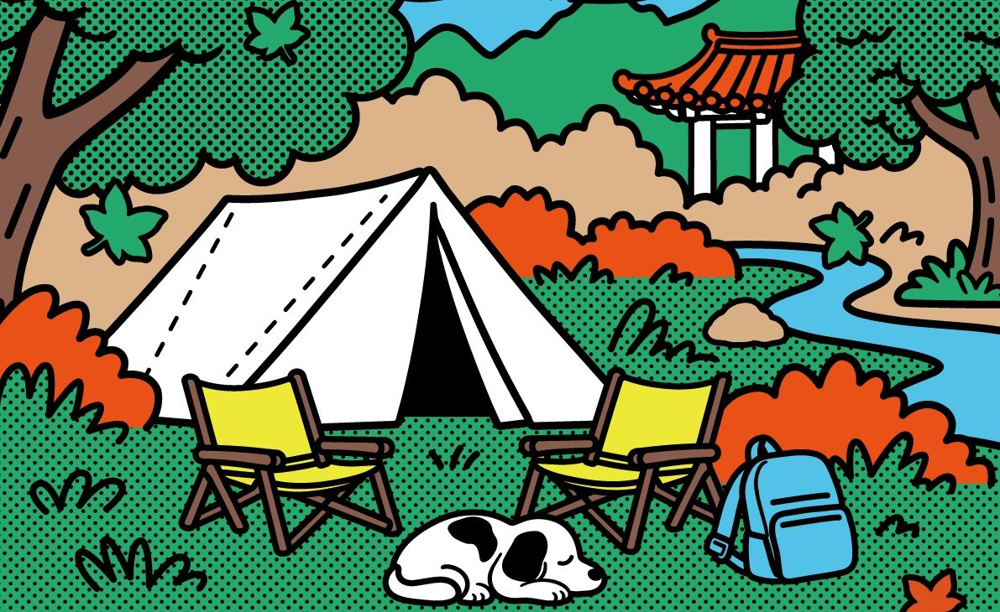
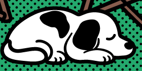

2026 산사캠프 시그니처 프로그램
마음처방전
心處方箋
쉿, 마음 듣는 중
당신의 마음을 읽고, 선명상의 지혜를 처방합니다
온전히 나를 마주하는 시간,
내 마음의 소리를
들어주는 시간
요즘 마음이 좀 시끄럽진 않으셨나요.
산사캠프의 마음처방전은 지금 내 마음 상태를 들여다보고,
그에 맞는 명상과 차, 향을 처방받는 작은 진료실입니다.
처방을 받았다면 스님과 함께 마음을 비우고, 나만의 화두를 찾아 돌아가세요.
처방 받으러 가는 길
질문 세 개에 답하면
내 마음 유형이 나와요
명상 · 차 · 향
처방약 받아가기
스님 해설 들으며
천천히 비우기
비운 자리에
나의 서원 세우기
[사진] 마음처방소 부스 현장
마음처방소 앞, 차례를 기다리는 중
Q2요즘 나의 고민은?6가지 고민 중에서 골라요
Q3이 고민이 나에게 왜 중요할까요?AI와 채팅하며 천천히 풀어봐요
답을 바탕으로 AI가 유형을 분석해
24가지 마음 유형 중 하나의
마음처방전을 발급해 드려요
처방전을 들고 약국 창구로 오세요.
마음 약사가 처방에 맞는 약을 지어 드리고,
‘나의 명상’을 어떻게 하면 되는지 차근차근 알려드려요.
나
의
화
두
그리고 약봉투 안에는 불교적 지혜 한 줄이 함께 들어 있어요.
세 가지 처방과 함께 가져가는, 나만의 화두입니다.
[사진] 마음 약국 처방약 수령 장면
약 지어 드릴게요
[사진] 스님 명상 해설 장면
스님 말씀 한 마디에 어깨가 툭
나만의 맞춤 명상을 알아보고,
내면을 바라보는 시간
스님의 해설로 내가 받은 명상 처방을 이해하고,
감정과 생각을 차분히 비워냅니다.
맞춤 명상으로 마음을 비워냈다면,
이번엔 화두를 바탕으로 나의 방향과 서원을 세워봅니다.
[사진]
화두 카드 작성 장면
또박또박, 나에게 쓰는 말
나의 서원 카드
나의 화두 :
그래서 나는,
하겠습니다.
※ 예시
이런 약봉투를 받아 가요
약봉투心處方箋
성 명[참가자 이름]
마음 유형[24가지 중 1]
처 방[명상] · [차] · [향]
복용법
‘[나의 화두 한 줄]’
※ 예시예요. 실제 처방전·약봉투 디자인은 달라질 수 있어요.
참여 안내
- 일시
- 2026. 11. 6(금) – 11. 8(일) 중 [운영 시간 확인 필요]
- 장소
- 하동 쌍계사 일원 [부스 위치 확인 필요]
- 순서
- 마음처방소 → 마음 약국 → 마음 비움터 → 나만의 화두찾기
- 소요 시간
- [확인 필요]
- 신청
- 산사캠프 전용 앱 사전예약 [확인 필요]
- 받는 것
- 마음처방전 · 처방약(명상 · 차 · 향) · 나의 화두

처방 물품은 마음 유형에 따라 조금씩 달라요.
사람이 몰리면 잠깐 기다릴 수 있어요.